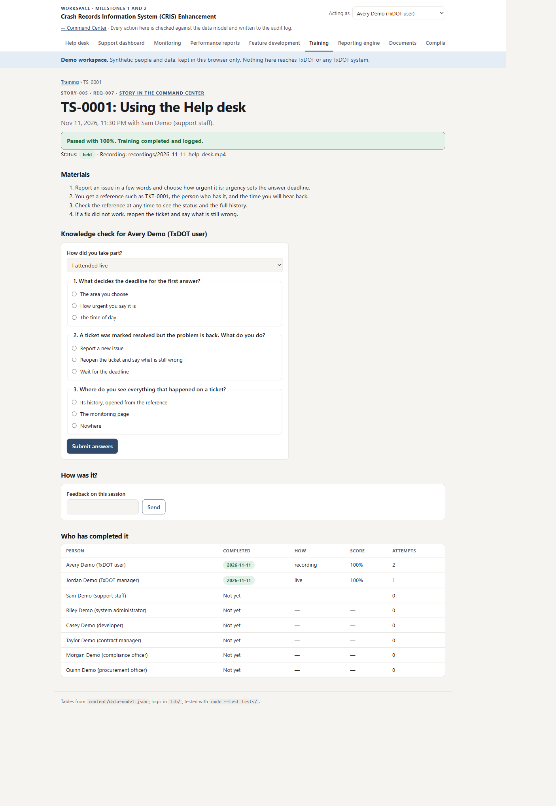
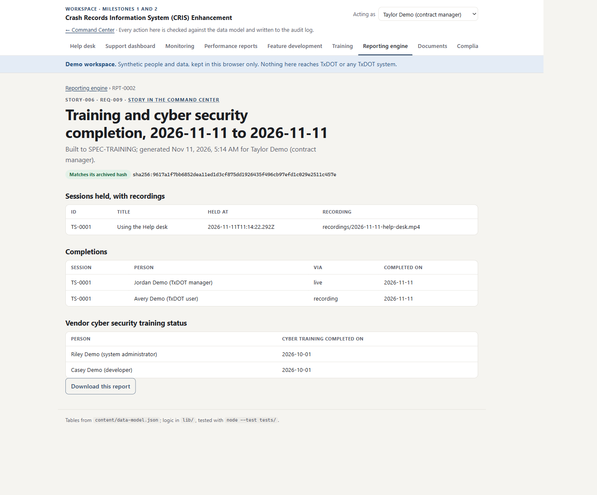
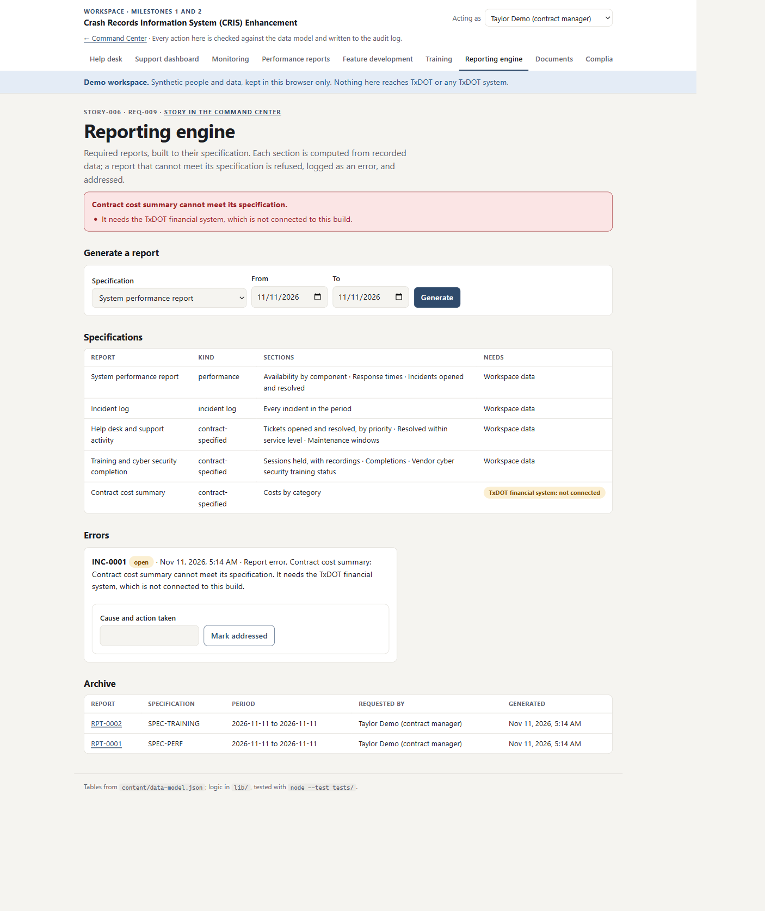
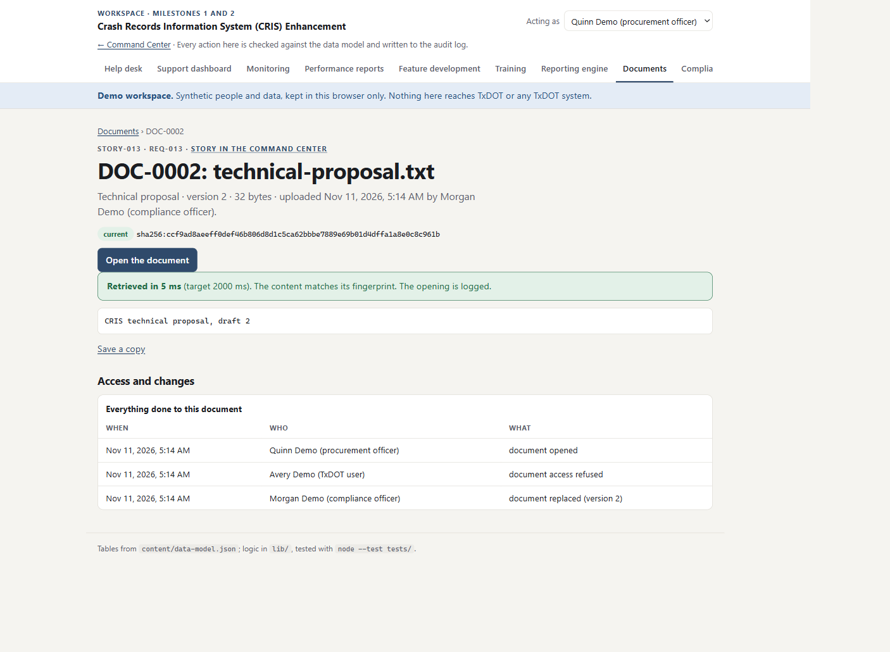
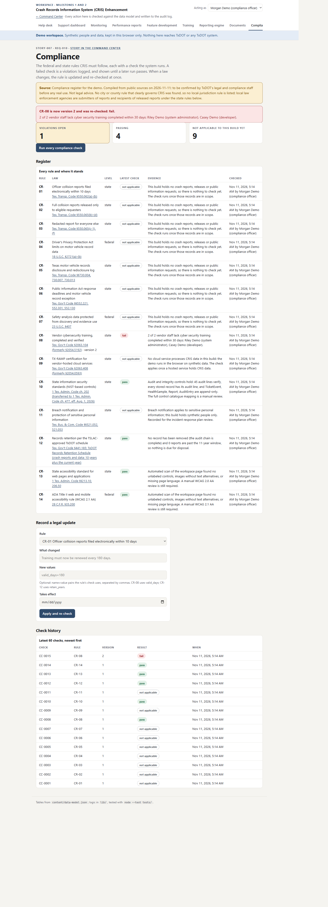

Arrow keys or the buttons move between slides. Everything shown was produced by the project on 10–11 November 2026; the workspace runs on synthetic people and data.
Milestone 2 · 11 November 2026
Training, reports, documents and the law
Four stories, verified by the portal within seconds of the push. The workspace now covers Releases 0, 1 and 2 of the TxDOT Crash Records plan.
10 / 16stories verified
500points on this build
50unit tests, all passing
13days left, 6 stories to go
The climb
Points awarded by the portal, milestone by milestone
Points on the build after each milestone, from the portal's own record. M0: Command Center; M1: help desk to features; M2: training to compliance
Each step is a set of commits that name their story. The push webhook registered in Milestone 1 meant Milestone 2 verified on its own, with no manual sync.
STORY-005 · Training
Sam teaches the help desk. Jordan proves it landed.
Sessions are scheduled with their materials, and can name the feature they teach.
Completion means passing a short knowledge check: 80% or more.
Jordan attends live and scores 100%
Vendor staff who finish the cyber course get the date on their record (REQ-020).

Who completed it, how, and with what score
STORY-005 · The missed session
Avery missed it, so Avery watches the recording
Heldonly with a recording on file
First checkwrong answers: not passed, logged
Second check100% from the recording
Loggedcompleted · via recording
Training counts when someone shows they understood it, wherever they watched it.
STORY-006 · Reporting engine
Taylor asks for reports. Each one meets its specification.
Five specifications: performance, incident log, help desk and support, training and cyber completion, contract costs.
Each section is computed from recorded data, then checked against the specification.
Archived once, never edited: Matches its archived hash

Training and cyber security completion, built to SPEC-TRAINING
STORY-006 · The report that says no
No financial system, no cost report, and it says why
Refused "It needs the TxDOT financial system, which is not connected to this build."
Logged as an incident on the reporting engine, one per specification while open.
Addressed by Taylor: read access requested from TxDOT IT.
A later successful run resolves the error by itself.

The error, its cause, and what was done
STORY-013 · Documents
Morgan files the proposal. Avery is turned away. Quinn opens it fast.
Stored by category, with a fingerprint, read back before the upload counts.
Draft 2 replaces draft 1; draft 1 is kept as superseded.
Access refused for Avery, and the attempt is logged.
Quinn opens it well within 2 seconds; the content matches its fingerprint.

Every upload, opening and refusal on the document's own page
STORY-007 · Compliance
Fourteen rules, checked against the live system
PassNot applicable to this build yetViolation
Compiled from official sources by a research agent on 11 Nov; to be confirmed by TxDOT legal. Not legal advice.
STORY-007 · When the law changes
A legal update, a violation, a fix, a clean run
Rule CR-08 v2training valid 30 days (drill)
Re-checked at once2 of 2 vendor staff lapsed: violation logged
RefresherRiley and Casey pass the cyber course
Re-runno violations

Two stories working together: compliance found it, training fixed it
Working in parallel
Three background agents
Narratoradded a male voice to every guided tour: this deck, the framework, the SSS pages
Law researchverified 14 rules at official sources; caught §2054.5192 → §2063.104 and 1 TAC 202 → 477
Frameworkupdated the project framework text for Milestone 2
Scoreboard · 11 November
Three releases done, two to go
Stories verified by release
VerifiedStill to build
Story
Commit
Tests
Portal
005 Training
4d2a08a
4
Verified · 50
006 Reporting engine
62097be
4
Verified · 50
013 Documents
fe53baa
4
Verified · 50
007 Compliance
a0fb8ce
6
Verified · 50
What comes next
Milestone 3: submissions, scoring and risk
STORY-008 Manage response submissions
STORY-009 Evaluate and score responses
STORY-010 Risk assessment tools
For TxDOT, through Ali: the contract manager's real list of required reports; read access to the financial system for the cost report; legal review of the 14-rule register; the proposed service levels.